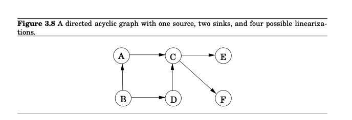
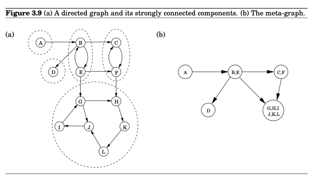
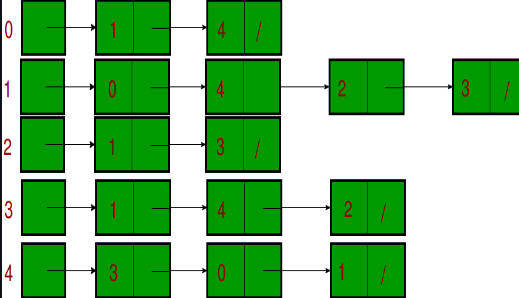
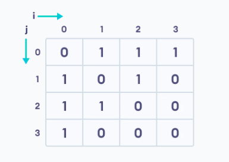
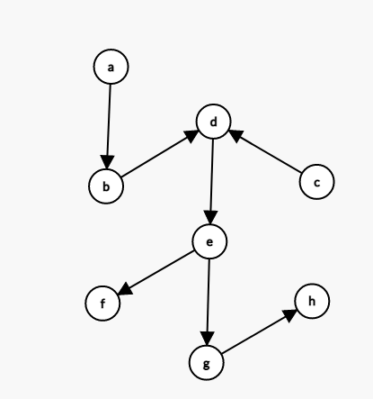
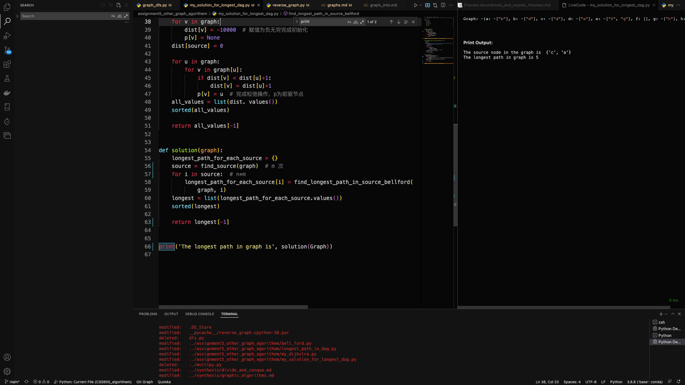
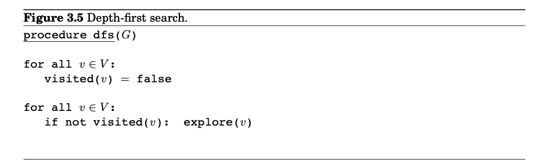
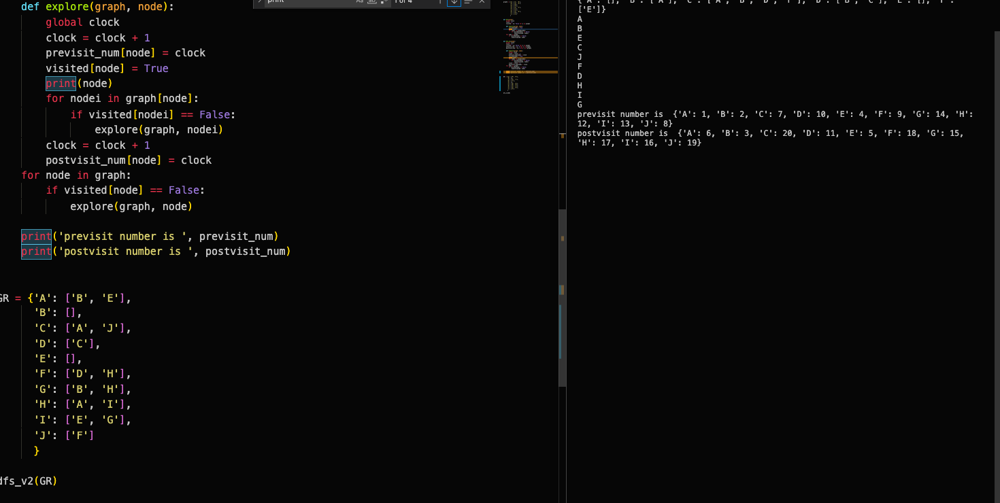

4 Graphs
4.1 basic definition
4.1.1 what is dag？
Directed acyclic graphs, or dags for short, come up all the time. They are good for modeling relations like causalities, hierarchies, and temporal dependencies。
- In a dag, every edge leads to a vertex with a lower post number.
- Every dag has at least one source and at least one sink.
- Every directed graph is a dag of its strongly connected components.
- So every metagraph is a dag. Because each node is a strongly connected components
4.1.2 what is directed and undirected graph
undirected graph
directed graph
4.1.3 what is sink what is source
- sink
First, I want to make it clear that sink and source only exists in directed graph.
A sink is a node of a directed graph with no exiting edges.
![]()
- source
A source is a node of a directed graph that don't have parent node. In the picture below is source node.

what is metagraph
- metagraph is a graph to describe the strong connection relationship in a directed graph.
- Nodes in a metagraph can contain more than one node.
- Every node in a metagraph is a strongly connected components.
- metagraph is a dag

exercise:
develop a function to find a source in an directed graph.
Graph = { 'a': ['b'], 'b': ['d'], 'c': ['d'], 'd': ['e'], 'e': ['f', 'g'], 'f': [], 'g': ['h'], 'h': [] }
solution:
- Iterate the node u in the graph, find the node v that its edge leads to.
- Add v into a set called not_source
- Iterate the node u in the graph again, check if the node is in set not_source
- If u is not in not_source, then it's source. Add u into a set() source
- if the length of source set is not 0,return source. Else return "there's no source in the graph"
def find_source(graph): source = set() not_source = set() # 这个方法其实是m次 for node in Graph: for edge in Graph[node]: not_source.add(edge) for node in Graph: if node not in not_source: source.add(node) if len(source) is not 0: return source else: return "there's no source in the graph"
4.2 graph representations
There are two way to build a graph
4.2.1 adjacency list

an unweighted directed graph with pythongraph2 = {'A': ['C', 'H'], 'B': ['A', 'G'], 'C': ['D'], 'D': ['F'], 'E': ['A', 'I'], 'F': ['J'], 'G': ['I'], 'H': ['F', 'G'], 'I': ['H'], 'J': ['C'] }
an weighted directed graph with python
graph = { 'a': {'b': -1, 'c': 4}, 'b': {'c': 2, 'd': 3, 'e': 2}, 'c': {}, 'd': {'b': 3, 'c': 5}, 'e': {'d': -3} }
4.2.2. adjacency matrix
In python an adjacency matrix is implemented like a 2-dimensional matrix [[0,1,1,1][1,0,1,0][1,1,0,0][1,0,0,0]]

class Graph(object): # Initialize the matrix def __init__(self, size): self.adjMatrix = [] for i in range(size): self.adjMatrix.append([0 for i in range(size)]) self.size = size # Add edges def add_edge(self, v1, v2): if v1 == v2: print("Same vertex %d and %d" % (v1, v2)) self.adjMatrix[v1][v2] = 1 self.adjMatrix[v2][v1] = 1 # Remove edges def remove_edge(self, v1, v2): if self.adjMatrix[v1][v2] == 0: print("No edge between %d and %d" % (v1, v2)) return self.adjMatrix[v1][v2] = 0 self.adjMatrix[v2][v1] = 0 def __len__(self): return self.size
exercise:
Develop a function to find the longtest Path in a dag(directed acyclic graph ), use adjacency list.

Graph = { 'a': ['b'], 'b': ['d'], 'c': ['d'], 'd': ['e'], 'e': ['f', 'g'], 'f': [], 'g': ['h'], 'h': [] }
solution:
- find the source nodes in one graph
- for each source find its longest path and put the result in a dictionary
{sourse1:longest_path, source2:longest_path} - pick up the longest path in the dictionary
def find_source(graph): source = set() not_source = set() # 这个方法其实是m次 for node in Graph: for edge in Graph[node]: not_source.add(edge) for node in Graph: if node not in not_source: source.add(node) return source def find_longest_path_in_source_bellford(graph, source): dist = {} p = {} max = 0 for v in graph: dist[v] = -10000 p[v] = None dist[source] = 0 for u in graph: for v in graph[u]: if dist[v] < dist[u]+1: dist[v] = dist[u]+1 p[v] = u all_values = list(dist. values()) sorted(all_values) return all_values[-1] def solution(graph): longest_path_for_each_source = {} # this dictionary stores longest path from each source to sink source = find_source(graph) # find the source nodes in one graph for i in source: # for each source find its longest path and put the result in a dictioanry longest_path_for_each_source[i] = find_longest_path_in_source_bellford( graph, i) longest = list(longest_path_for_each_source.values()) sorted(longest) # pick up the longest path return longest[-1]

4.3 graph traversal algorithms
4.3.1 depth first search
Presocode in Dasgupta

a refined method for dfs with previsit and post visit number
function dfs(G):
Input: G = (V, E) is a graph, v in V
Output: visited(u) is set to true for all nodes u reachable from v
for all v in V:
visited(v) = false
for all v in V:
if not visited(v): explore(G, v)
function explore(G, v):
visited(v) = true
previsit(v)
for each edge (v,u) in E:
if not visited(u): explore(G, u)
postvisit(v)
4.3.2 breath first search
def BFS(self, s): # Mark all the vertices as not visited visited = [False] * (max(self.graph) + 1) # Create a queue for BFS queue = [] # Mark the source node as # visited and enqueue it queue.append(s) visited[s] = True while queue: # Dequeue a vertex from # queue and print it s = queue.pop(0) print (s, end = " ") # Get all adjacent vertices of the # dequeued vertex s. If a adjacent # has not been visited, then mark it # visited and enqueue it for i in self.graph[s]: if visited[i] == False: queue.append(i) visited[i] = True
exercise:
Develop the dfs version 2 with previsit and post visit number according to the Presocode. Run the code on Graph.
GR= {'A'=['B','E'], 'B'=[], 'C'=['A','J'], 'D'=['C'], 'E'=[], 'F'=['D','H'], 'G'=['B','H'], 'H'=['A','I'], 'I'=['E','G'], 'J'=['F'] }
Check if the out put is
previsit_number_GR={
'A'=1
'B'=2
'C'=7
'D'=10
'E'=4
'F'=9
'G'=14
'H'=12
'I'=13
'J'=8
}
postvisit_number_GR={
'A'=6
'B'=3
'C'=20
'D'=11
'E'=5
'F'=18
'G'=15
'H'=17
'I'=16
'J'=19
}
solution:
def dfs2(graph): global clock clock = 0 visited = {a: False for a in graph} previsit_num = {i: 0 for i in graph} postvisit_num = {i: 0 for i in graph} def explore(graph, node): global clock clock = clock + 1 previsit_num[node] = clock visited[node] = True print(node) for nodei in graph[node]: if visited[nodei] == False: explore(graph, nodei) clock = clock + 1 postvisit_num[node] = clock for node in graph: if visited[node] == False: explore(graph, node) print(previsit_num) print(postvisit_num)

Apparently, it works.
4.4 connectivity and strongly connected regions
4.4.1 connectivity in undirected graph
- A graph that is not connected can be decomposed in a natural and obvious manner into several connected components
- In directed graph Two nodes u and v of a directed graph are connected if there is a path from u to v and a path from v to u.
- An undirected graph is connected if there is a path between any pair of vertices.
4.4.2 an algorithem to check connectivity on a directed graph
- Run depth-first search on GR.
- Run the undirected connected components algorithm (from Section 3.2.3) on G, and dur- ing the depth-first search, process the vertices in decreasing order of their post numbers from step 1.
exercise:
The first step of the algorithem to check connectivity on a directed graph is Run depth-first search on a reversed graph.Please write a function to reverse a graph. Then run the dfs_v2 on the reversed graph.
solution:
- how to reverse create a new dictionary graphr , iterate on the vertex u, if u's edge leads to v, then add in graphr[v]:u
def reverse_graph(graph): global t t = 0 graphr = {key: [] for key in graph} # print(graphr) for key in graph: for i in graph[key]: graphr[i].append(key) t = t+1 return graphr def step1_strongly_connected_components(graph): GR = reverse_graph(graph) post_number = dfs_v2(GR) sort_orders = sorted(post_number.items(), key=lambda x: x[1], reverse=True) List = [] for i in sort_orders: List.append(i[0]) return List